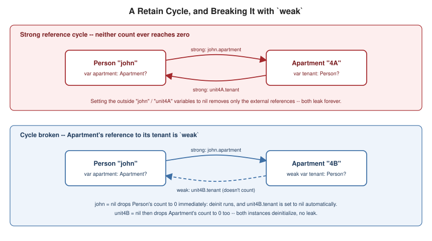

Automatic Reference Counting
|
This content was generated with the assistance of AI and should be verified against the official documentation before being relied on in production. |
Automatic Reference Counting (ARC) is how Swift manages the memory of class instances: it tracks, for every instance, how many strong references currently point to it, and deallocates the instance the moment that count reaches zero — structs and enums, being value types, are unaffected by ARC entirely (see Structures and Classes for the value-vs-reference distinction this depends on).
How ARC Works
class Person {
let name: String
init(name: String) {
self.name = name
print("\(name) is being initialized")
}
deinit { print("\(name) is being deinitialized") }
}
var reference1: Person? = Person(name: "John Appleseed") // strong reference count: 1
var reference2 = reference1 // count: 2
var reference3 = reference1 // count: 3
reference1 = nil // count: 2
reference2 = nil // count: 1
reference3 = nil // count: 0 -- deinit runs nowEvery let/var of class type is, by default, a strong reference: assigning it bumps the referenced
instance’s reference count, and setting it to nil (or letting it go out of scope) decrements that count. ARC
performs this bookkeeping automatically at compile time by inserting the retain/release calls — no manual
retain/release calls are ever written in Swift — and frees the instance’s memory the instant its count
reaches zero, which is why reference3 = nil above is what actually triggers deinit, not any of the earlier
assignments.
Strong Reference Cycles Between Class Instances
class Person2 {
let name: String
var apartment: Apartment?
init(name: String) { self.name = name }
deinit { print("\(name) is being deinitialized") }
}
class Apartment {
let unit: String
var tenant: Person2?
init(unit: String) { self.unit = unit }
deinit { print("Apartment \(unit) is being deinitialized") }
}
var john: Person2? = Person2(name: "John")
var unit4A: Apartment? = Apartment(unit: "4A")
john!.apartment = unit4A // Apartment 4A: +1 strong reference (from john.apartment)
unit4A!.tenant = john // Person John: +1 strong reference (from unit4A.tenant)
john = nil // Person's count drops to 1 (unit4A.tenant still holds it) -- deinit does NOT run
unit4A = nil // Apartment's count drops to 1 (john.apartment still held it) -- deinit does NOT run
// both instances leak: nothing external references either, yet neither's count ever reaches zeroWhen two class instances hold strong references to each other — john.apartment pointing at the apartment and
unit4A.tenant pointing back at the person — setting the outside variables to nil removes only the external
references. Each instance still holds a strong reference to the other, so neither count ever reaches zero and
deinit never runs for either: a strong reference cycle, and a permanent memory leak for as long as the
program runs.
Resolving Cycles with weak and unowned
class Person3 {
let name: String
var apartment: Apartment2?
init(name: String) { self.name = name }
deinit { print("\(name) is being deinitialized") }
}
class Apartment2 {
let unit: String
weak var tenant: Person3? // weak: the tenant may legitimately become nil (move out) independently
init(unit: String) { self.unit = unit }
deinit { print("Apartment \(unit) is being deinitialized") }
}
var john3: Person3? = Person3(name: "John")
var unit4B: Apartment2? = Apartment2(unit: "4B")
john3!.apartment = unit4B
unit4B!.tenant = john3 // this reference does NOT increment Person3's strong count
john3 = nil // Person3's count reaches 0 immediately -- deinit runs, apartment.tenant becomes nil
unit4B = nil // Apartment2's count reaches 0 -- deinit runs too, no leakDeclaring one side of the relationship weak (always as an Optional var, since ARC must be able to set it to
nil automatically the instant the referenced instance is deallocated) breaks the cycle: that reference no
longer counts toward the referenced instance’s strong count, so the instance’s lifetime is governed entirely by
its other references. weak is the right choice whenever the referenced instance can legitimately reach a
shorter lifetime and become nil on its own — a tenant moving out while the apartment persists.
class Customer {
let name: String
var card: CreditCard?
init(name: String) { self.name = name }
deinit { print("\(name) is being deinitialized") }
}
class CreditCard {
let number: UInt64
unowned let customer: Customer // unowned: a card can never outlive its customer, so this is never nil
init(number: UInt64, customer: Customer) {
self.number = number
self.customer = customer
}
deinit { print("Card #\(number) is being deinitialized") }
}
var customer: Customer? = Customer(name: "Sam")
customer!.card = CreditCard(number: 1234_5678_9012_3456, customer: customer!)
customer = nil // both Customer and CreditCard deinit here -- no cycle, no leakunowned instead declares that the referenced instance is expected to always exist for as long as the
referencing one does — a credit card cannot outlive its customer, so CreditCard.customer is a non-optional,
non-weak unowned let: cheaper than weak (no Optional wrapping, no runtime nil-check machinery) but unsafe
if that invariant is ever violated — accessing an unowned reference after its instance has been deallocated
traps at runtime, exactly like force-unwrapping a nil Optional.
class Country {
let name: String
var capitalCity: City! // implicitly unwrapped: guaranteed non-nil once both inits finish
init(name: String, capitalName: String) {
self.name = name
self.capitalCity = City(name: capitalName, country: self) // `self` is fully initialized by this point
}
}
class City {
let name: String
unowned let country: Country // unowned var also exists for cases where the property itself may change
init(name: String, country: Country) {
self.name = name
self.country = country
}
}
var country = Country(name: "Canada", capitalName: "Ottawa")
print("\(country.capitalCity!.name) is the capital of \(country.name)")
class Department {
let name: String
unowned var currentManager: Employee? // unowned optional: may be reassigned/nil'd, still no ARC bump when set
init(name: String) { self.name = name }
}
class Employee {
let name: String
init(name: String) { self.name = name }
}Two variations complete the toolkit. Two mutually-dependent classes whose properties must not be optional on
either side (a Country always has a capitalCity; a City always has a country) use the implicitly
unwrapped optional property pattern: one side (Country.capitalCity) is declared City! so it can start as
nil only for the instant between the two initializers running, letting self be passed to City's initializer
before Country's own initializer has finished, while still behaving as a guaranteed non-optional everywhere
else in the program. Unowned optional references (unowned var currentManager: Employee?) cover the case
where an unowned relationship’s target genuinely can be reassigned or absent over time (unlike a weak
reference, the caller remains responsible for never leaving it pointing at a deallocated instance) — useful when
the "no strong-count contribution" property of unowned is wanted alongside the ability to reassign or clear it.

Strong Reference Cycles in Closures and Capture Lists
class HTMLElement {
let name: String
let text: String?
lazy var asHTML: () -> String = { [unowned self] in // without [unowned self], self is captured strongly
if let text = self.text {
"<\(self.name)>\(text)</\(self.name)>"
} else {
"<\(self.name) />"
}
}
init(name: String, text: String? = nil) {
self.name = name
self.text = text
}
deinit { print("\(name) is being deinitialized") }
}
var paragraph: HTMLElement? = HTMLElement(name: "p", text: "hello")
print(paragraph!.asHTML())
paragraph = nil // deinit runs: the closure's [unowned self] doesn't keep the instance aliveA closure stored as a property, like asHTML above, captures any instance property or method it references — including self — strongly by default, exactly like a class-to-class strong reference. Since asHTML is
itself a property of HTMLElement, and its closure body captures self to read name/text, that closure and
its owning instance hold strong references to each other: the same reference-cycle shape as before, just with a
closure standing in for one of the two classes. The fix is the same tool covered in
Closures' capture lists — [unowned self] or [weak self]
inside the closure’s capture list, written before its parameter list, overrides the default strong capture for
just the names listed.
weak vs. unowned Decision Guidance
weak and unowned both avoid contributing to a strong reference count, but they answer a different question
about the other instance’s lifetime relative to the one holding the reference:
-
Use
weakwhenever the referenced instance can legitimately reach a shorter lifetime than the referring one and become absent while the referring instance is still alive — a delegate, a parent-to-child-observer back-reference, or (as above) a tenant who may move out while the apartment persists.weakis alwaysOptional, is set tonilautomatically by ARC the instant its target deallocates, and costs a small amount of extra runtime bookkeeping to make that automatic nil-ing safe. -
Use
unownedwhenever the referenced instance is guaranteed to have the same or longer lifetime than the referring one — a credit card’s customer, a city’s country — so the reference is expected to always be valid whenever it is actually accessed.unownedis cheaper (noOptional, no automatic nil-out machinery) but unsafe if that invariant is ever wrong: accessing a danglingunownedreference traps.
When in doubt about which instance truly outlives the other, default to weak: a stray force-unwrap of a nil
weak reference is at least an Optional-shaped bug that surfaces where the unwrap happens, whereas a wrong
unowned assumption traps unpredictably at whatever later point the dangling reference happens to be touched.
Diagnosing Leaks: Xcode Memory Graph and Instruments
Two Xcode-integrated tools find reference cycles ARC itself cannot detect on its own (ARC only ever frees an
instance whose count reaches zero — a cycle’s count never does, so no runtime warning fires automatically):
Xcode’s Memory Graph Debugger (the icon in the debug bar, or Debug → Debug Workflow → View Memory Graph)
snapshots every live object and its reference graph at a breakpoint, highlighting cycles it detects among
instances that should already be deallocated; Instruments' Leaks and Allocations templates instead
profile a running app over time, reporting instances whose count never reaches zero and pinpointing the
retaining reference. Both are Apple-platform, Xcode-based tooling — there is no equivalent bundled with the
open-source toolchain on Linux, where the usual substitute is careful deinit logging (as this page’s own
examples do) or third-party memory-graph tooling.
Making Leaks Visible: Reference Graphs in the Bookshelf
Leaks in Swift are almost always reference cycles: two objects, or an object and a closure it stores, that
keep each other alive. A cycle never crashes; the memory simply stays allocated, and the only symptom is a deinit
that never runs. The most dependable way to see this is to count live instances and print from deinit. The program
below models a Reader who registers a callback for returned books, first with a strong capture and then with a weak one.
// Count live instances so that leaks become visible in the output.
nonisolated(unsafe) var live = 0
final class Reader {
let name: String
var onReturn: (() -> Void)?
init(name: String) { self.name = name; live += 1 }
deinit { live -= 1; print("deinit Reader \(name)") }
func watchStrong() {
onReturn = { print("\(self.name) returned a book") } // closure captures self strongly
}
func watchWeak() {
onReturn = { [weak self] in
guard let self else { print("reader already gone"); return }
print("\(self.name) returned a book")
}
}
}
func leakyScope() {
let r = Reader(name: "Ada")
r.watchStrong() // r -> closure -> r : a cycle
r.onReturn?()
}
func fixedScope() {
let r = Reader(name: "Grace")
r.watchWeak() // closure holds r weakly: no cycle
r.onReturn?()
}
leakyScope()
print("after leakyScope: live =", live)
fixedScope()
print("after fixedScope: live =", live)
// A weak reference becomes nil at the moment the last strong reference goes away.
var strong: Reader? = Reader(name: "Linus")
weak var observer = strong
print("observer is", observer?.name ?? "nil")
strong = nil
print("observer is", observer?.name ?? "nil")
// unowned: no optional, but the access traps if the object has gone.
final class Loan {
unowned let reader: Reader
init(reader: Reader) { self.reader = reader }
}
let owner = Reader(name: "Barbara")
let loan = Loan(reader: owner)
print(loan.reader.name)Ada returned a book
after leakyScope: live = 1
Grace returned a book
deinit Reader Grace
after fixedScope: live = 1
observer is Linus
deinit Reader Linus
observer is nil
Barbara-
Ada leaks.
leakyScopereturns withlive = 1and nodeinit Reader Adaline, ever. The function’s localris gone, butr.onReturnholds a closure that capturedself, andselfholds the closure. -
Grace does not. The
[weak self]capture list gives the closure a weak reference, so whenfixedScopeends the only strong reference disappears anddeinitruns immediately: ARC frees an object at the point of its last release, not at the next garbage-collection pass. -
A weak reference reads as
nilafter deallocation, which is why it is always optional and always avar;observerprintedLinusand thennil. -
unownedhas no optional, so readingloan.readeris cheaper and nicer to write, but it is a promise that the owner outlives the loan. If the promise is broken, the access traps at run time.
strong count 2] -->|strong, onReturn| C1[Closure] C1 -->|strong, captured self| R1 end subgraph fixed [Weak capture: freed at scope end] R2[Reader Grace
strong count 1] -->|strong, onReturn| C2[Closure] C2 -.->|weak, captured self| R2 end
Choosing the Capture
| Situation | Capture |
|---|---|
callback stored by the object, owner may disappear first |
|
callback that can never outlive |
|
closure runs immediately and is not stored (such as the closure given to |
no capture list needed |
a |
no cycle unless the task is stored in a property and never finishes; cancel it when the owner is torn down |
Pitfalls
-
A
deinitthat never prints is the most reliable leak detector in a unit test: create the object in a scope, keep aweakreference to it, leave the scope and assert the weak reference isnil. -
guard let selfinside a[weak self]closure turns the weak reference into a strong one only for the closure’s duration; do not store that strong reference. -
Value types do not take part in cycles by themselves, but a struct holding a class reference can: the cycle goes through the class.
-
Delegates should be declared
weakand the protocol constrained toAnyObject; otherwise the owner and its delegate form a cycle.
See Also
-
Structures and Classes — value vs. reference semantics, the foundation ARC’s whole model depends on.
-
Closures — capture lists (
[weak self],[unowned self]) in the context of escaping and non-escaping closures generally. -
Initialization and Deinitialization —
deinititself, and two-phase initialization’s ordering guarantees. -
Memory Safety and Unsafe Pointers — exclusivity enforcement, a different memory-safety mechanism from ARC’s reference counting.